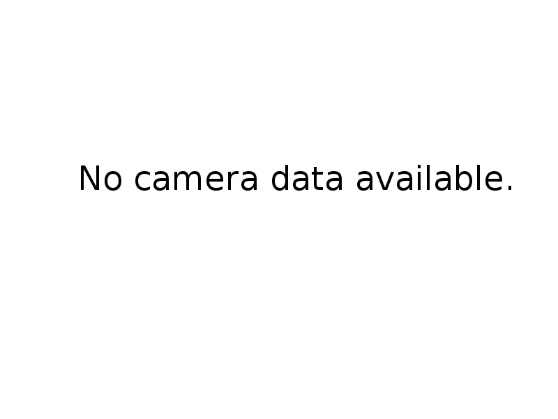

| Hostname: | Connection status:
Initial value.
|
|
Initial Parameters (set before continuing)
Motor Speed: Turn Speed: Move Duration: |
Touch Screen Control
|
|  |
Make sure you run rosrun web_video_server web_video_serverand the image stream. Topic: |